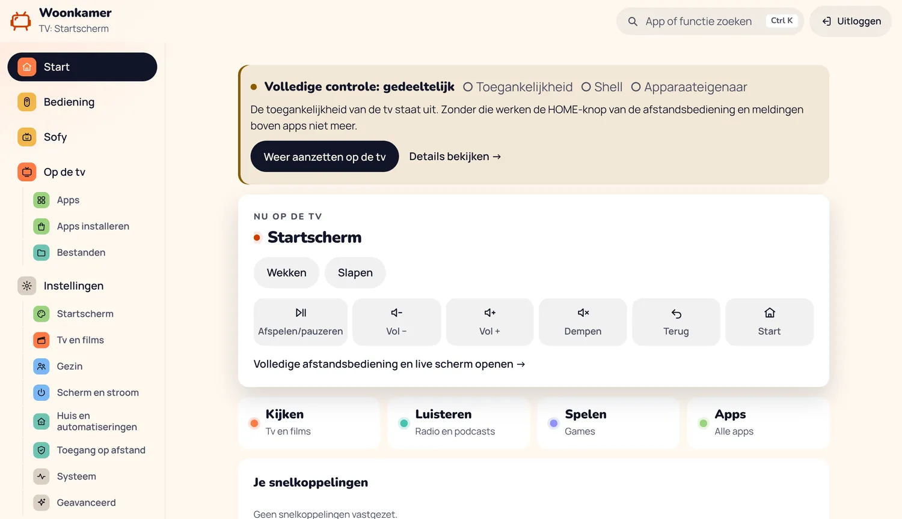
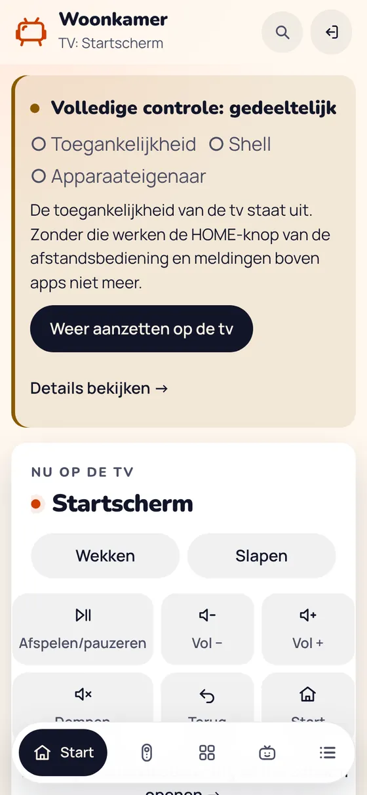

Gezellige tijd op je tv. Alles op zijn plek, zoals in een opgeruimde woonkamer.
Gemaakt voor wie gewoon op de bank wil liggen en tv kijken. Sofaly vervangt het startscherm, niet je tv: Google is er nog, er zijn geen advertenties, en alles heeft één vaste plek.
Vijf rijen, alles in beeld
Verder kijken, Kijken, Luisteren, Spelen en Apps. Twee klikken naar alles.
Helemaal geen advertenties
Zelfs niet in het gratis abonnement, geen enkele gesponsorde plek. Er gaat niets van je kijkgedrag je huis uit.
Snel op een eenvoudige tv
Gemeten op een 32-bit Chromecast: de animatie past zich aan wat het apparaat aankan.
Gemaakt voor het hele huis
Ook voor opa en oma
Grote tekst, een eenvoudige modus die de naam van de app uitspreekt, hoog contrast en de schermlezer. In 27 talen.
Wordt samen met jou wakker
De wekker zet de tv zelf aan, zet het volume langzaam hoger en opent Goedemorgen: tijd, weer en agenda.
Let op het huis
Lampen, scènes en deurbel van Home Assistant op de tv. Gaat slapen als iedereen de deur uit is.
Praat met je telefoon
Bedienen, typen en berichten sturen vanaf elke telefoon of computer in huis, beschermd met een pincode.
Weer dat klopt
Het huidige weer komt van het dichtstbijzijnde vliegveld: gemeten, niet geraden. Een verwachting voor 9 dagen met één OK.
Zorgt voor zichzelf
Elke nacht een vergrendelde back-up, onderhoud terwijl je slaapt en een diagnose die uitlegt wat er misging.
Je tv ook op je telefoon en computer.
Open de browser op hetzelfde netwerk, typ de pincode en klaar: afstandsbediening, typen met accenten, het tv-scherm live, berichtjes en instellingen. Niets te installeren en geen account.


- Paneel op je telefoon en computerAfstandsbediening, typen met accenten, een live beeld van het tv-scherm, foto's voor de schermbeveiliging, het prikbord en back-ups, vanuit de browser van elk apparaat in huis.
- Vraag het de tvTyp of zeg “open YouTube”, “herinner me over 7 minuten”, “zet uit over 30 minuten” en de tv doet het.
- Delen vanaf je telefoonAls app geïnstalleerd verschijnt het paneel bij Delen: een YouTube-video opent op de tv, een link opent op de tv en een tekst wordt een bericht.
- Snelkoppeling op WindowsDe tv verschijnt in Netwerk in de Verkenner met een snelkoppeling die het paneel opent, ook als het IP verandert.
- De tv als netwerkstationKopieer bestanden naar de tv door ze te slepen: op Windows verschijnt hij in Deze pc zoals een telefoon; op Mac, Linux en telefoons via beveiligde WebDAV.
- Meerdere huizenZorg voor de tv bij jou thuis en bij je ouders vanaf dezelfde telefoon.
Echte schermen van het paneel, met voorbeeldgegevens.
120 nieuwe dingen die je tv kan. Geordend in 12 werelden, zoals de rijen het scherm ordenen.
- Het startschermEen overzichtelijk scherm dat iedereen begrijpt, ingedeeld zoals jij wilt.19
- KijkenJe films, je series en een speler als in een thuisbioscoop.14
- LuisterenRadio en podcasts met dezelfde zorg als video.5
- SpelenAl je games op één plek, klaar voor de controller.6
- AppsJe apps in een volgorde die klopt.3
- Het huisWekker, timers, automatiseringen en het slimme huis.13
- Weer en schermbeveiligingHet juiste weer en een schermbeveiliging die je graag laat aanstaan.13
- GezinEen profiel voor iedereen, zorg voor de kinderen en een warm welkom voor gasten.12
- Telefoon en computerDe tv praat met de apparaten in huis.11
- Zorgt voor zichzelfBack-up, onderhoud en diagnose zonder dat jij eraan hoeft te denken.13
- Voor iedereenGemaakt voor mensen die op verschillende manieren zien, horen of de afstandsbediening gebruiken.5
- PrivacyGeen advertenties, niets wat je volgt, en een pincode waar het ertoe doet.6
Het startscherm
Een overzichtelijk scherm dat iedereen begrijpt, ingedeeld zoals jij wilt.

De rijen
Verder kijken, Kijken, Luisteren, Spelen en Apps, elk in een eigen rij, de een onder de ander. Alles in beeld, in grote tekst.
Verder kijken
Eén plek om terug te gaan naar waar je mee bezig was: de aflevering, de zender, de podcast of de laatste app.
Bovenste balk
Zoeken, spraak, het weer op één regel en de klok, altijd op dezelfde plek. Hij klapt in terwijl je bladert, zodat het scherm ruimte heeft.
De rijen
Verder kijken, Kijken, Luisteren, Spelen en Apps, elk in een eigen rij, de een onder de ander. Alles in beeld, in grote tekst.
Waar: Het is het startscherm: het verschijnt als je op HOME drukt.Verder kijken
Eén plek om terug te gaan naar waar je mee bezig was: de aflevering, de zender, de podcast of de laatste app.
Waar: Een rij op het startscherm.Bovenste balk
Zoeken, spraak, het weer op één regel en de klok, altijd op dezelfde plek. Hij klapt in terwijl je bladert, zodat het scherm ruimte heeft.
Waar: Ga ernaartoe met ▲.Google blijft werken
De Google Assistent, Gemini, zoeken en je Google-account werken zoals altijd. Sofaly verandert het startscherm, niet je tv.
Waar: Gebruik de microfoonknop zoals altijd.Snelpaneel
Wifi, Bluetooth, slaaptimer, geluidsuitvoer, wekker, profielen, meldingen en de boodschappenlijst, vanuit elke app.
Waar: Houd TERUG ingedrukt.Jouw afstandsbediening, jouw regels
HOME komt altijd terug bij Sofaly. TERUG ingedrukt houden opent het snelpaneel, HOME ingedrukt houden opent het Huis, en OK ingedrukt houden op een app opent het menu ervan.
Waar: Een toetsentester toont elke knop die de tv ontvangt.Speelt nu
Een pil bovenaan met de hoes en titel van wat er speelt. OK pauzeert of hervat, OK ingedrukt houden opent de app.
Waar: Zet het aan in Startscherm › Meer opties.Thema's en achtergronden
Donker, met de afbeelding van wat de focus heeft. Galerij, met elke dag een schilderij uit The Met. Hemel, met satelliet en kaart. Of een eigen achtergrond, foto of video. Achtergronden van plug-ins werken ook, zoals de luchtopnamen van Overflight.
Waar: Donker, Galerij en Hemel in Basic; de andere in Pro.Pictogrammen die je mooi vindtPro
Gebruik een pictogrammenpakket uit Play of wijzig het pictogram van één app, een voor een.
Waar: Houd OK ingedrukt op de app › Pictogram wijzigen.Animaties die bij je tv passen
Krachtige tv's animeren alles; eenvoudigere animeren alleen wat jij kiest en vertragen vanzelf als er frames wegvallen.
Waar: Instellingen › Uiterlijk.MaanfasePro
De maan van vannacht en hoeveel ervan verlicht is, berekend op de tv zelf, zonder internet.
Waar: In de verwachting, op de schermbeveiliging en op het weerpictogram 's nachts. Instellingen › Uiterlijk.AftellenPro
Hoeveel dagen het nog is tot de datum die je kiest, of tot de volgende feestdag.
Waar: In de pil bovenaan het scherm. Instellingen › Uiterlijk.HuisherinneringPro
Een notitie die terugkomt op de weekdagen die je kiest: afvaldag, medicijnen, een les.
Waar: In de pil bovenaan het scherm. Instellingen › Uiterlijk.Status van je dienstPro
De tv controleert een adres dat je opgeeft en laat zien of het werkt: de thuisserver, de website van de winkel.
Waar: In de pil bovenaan het scherm. Instellingen › Uiterlijk.Koersen van vandaagPro
Valuta, bitcoin en ether tegen de koers van vandaag, uit open officiële bronnen.
Waar: Naast het weer, in de bovenste balk. Instellingen › Uiterlijk.De volgende wedstrijd van je teamPro
Wanneer en tegen wie je team de volgende keer speelt, op een kaart op het startscherm.
Waar: Op het startscherm. Instellingen › Uiterlijk.Kaarten van andere appsPro
Naast de eigen kaarten van Sofaly zetten partner-apps hun kaarten op het startscherm: de bezorging van je bestelling, de bus, het bericht van de VvE.
Waar: Kaarten staan aan het eind van Kijken.Het Eiland bovenaan het scherm
Meldingen wisselen elkaar af in een pil bovenaan: geen internet, herinnering, agenda en wekker. Wat belangrijk is, wordt 5 seconden groot met “▲ om te openen”, de deurbel van het Huis verschijnt meteen en als je de tv aanzet, krijg je een samenvatting van wat er gebeurde.
Waar: Startscherm, bovenaan.De juiste suggestie op het juiste moment
Zonder kunstmatige intelligentie: op basis van het gebruik in de week stelt de tv voor wat op dat uur logisch is.
Waar: Startscherm.
Kijken
Je films, je series en een speler als in een thuisbioscoop.
Van de computer
Video's, muziek en foto's uit Plex, Jellyfin, Emby, mappen op pc of NAS (SMB, WebDAV, FTP, SFTP, NFS), OneDrive, Dropbox, Box, Google Drive, UPnP en USB-sticks.
Een speler die alles afspeelt
Dolby-geluid (AC3, E-AC3), DTS en TrueHD, en ondertitels van Blu-ray, dvd en anime, zonder Kodi of VLC te installeren.
Gaat verder waar je stopte
Films en afleveringen komen terug op de juiste plek. De volgende aflevering start na 10 seconden, en na 3 achter elkaar vraagt de tv of je nog kijkt.
Van de computer
Video's, muziek en foto's uit Plex, Jellyfin, Emby, mappen op pc of NAS (SMB, WebDAV, FTP, SFTP, NFS), OneDrive, Dropbox, Box, Google Drive, UPnP en USB-sticks.
Waar: Servers die aanstaan en USB-sticks verschijnen vanzelf; de rest voeg je toe met Toevoegen.Een speler die alles afspeelt
Dolby-geluid (AC3, E-AC3), DTS en TrueHD, en ondertitels van Blu-ray, dvd en anime, zonder Kodi of VLC te installeren.
Waar: Druk tijdens een video op ▼ voor audio, ondertiteling en grootte van de ondertitels.Gaat verder waar je stopte
Films en afleveringen komen terug op de juiste plek. De volgende aflevering start na 10 seconden, en na 3 achter elkaar vraagt de tv of je nog kijkt.
Waar: Werkt vanzelf.Intro overslaan
Als de intro van een serie bekend is, verschijnt “Intro overslaan · OK”. Je kunt de intro ook één keer markeren en de tv onthoudt het.
Waar: Staat standaard aan.Voorkeur voor audio en ondertiteling
Origineel met ondertitels of nagesynchroniseerd, één keer gekozen en per titel onthouden. Ondertitels van internet als het bestand er geen heeft.
Waar: Tv en films › Audio en ondertiteling.Films zonder haperingen
De tv schakelt over naar 24 Hz terwijl een film speelt, zodat camerabewegingen vloeiend blijven.
Waar: Gaat aan met de film; het scherm knippert een seconde zwart.Beter zien en horen
Ondertitels op een zwart vlak of in geel, “Duidelijkere stem” die spraak naar voren haalt, en “Gelijk volume” dat harde films temt en zachte optilt.
Waar: In het ▼-menu van de speler.Automatische ondertitelsUltra
Als er geen ondertitel in je taal is, vertaalt de tv de ondertitel die er wel is.
Waar: Kies het in het ondertitelmenu van de speler.Volledige filmpagina'sUltra
Poster, beoordeling, cast, trailer, leeftijdskeuring en de filmreeks op een mooie pagina, in grote tekst. Met “Wie is die acteur?”: foto, personage en ander werk.
Waar: OK op een film of serie.Je lijsten van Trakt en SimklPro
Wat je wilt kijken en wat je gekeken hebt, gesynchroniseerd met je account en je andere apparaten.
Waar: Log in met de QR in Tv en films › Diensten.Eén zoekopdracht voor alles
Vindt films, series, zenders en apps tegelijk, en neemt dezelfde zoekopdracht mee naar YouTube, Netflix of Prime Video.
Waar: In de bovenste balk, of met je stem.Twee ondertitels tegelijk
Bijvoorbeeld je eigen taal onderaan en het origineel bovenaan, om te leren of om samen te kijken.
Waar: ▼-menu van de speler › Ondertiteling.Luidere dialogen
Als 5.1-geluid stereo wordt, blijft spraak vooraan en overstemmen explosies de stemmen niet.
Waar: ▼-menu van de speler.Geen spoilers en een tweede taal
De samenvatting van een aflevering die je nog niet zag, blijft verborgen. Geen audio of ondertitels in je taal? Dan komt de tweede taal die je koos.
Waar: Tv en films › Audio en ondertiteling.
Luisteren
Radio en podcasts met dezelfde zorg als video.

Radio van over de hele wereld
Duizenden open radiozenders, op naam, land of genre, met je favorieten en de laatst gespeelde.
Podcasts
Abonneer op naam, luister op de tv en ga verder met de aflevering waar je stopte.
Podcasts ontdekken
Doorzoek de hele open podcastcatalogus en zie wat er populair is in jouw land.
Radio van over de hele wereld
Duizenden open radiozenders, op naam, land of genre, met je favorieten en de laatst gespeelde.
Waar: Luisteren › Radio.Podcasts
Abonneer op naam, luister op de tv en ga verder met de aflevering waar je stopte.
Waar: Luisteren › Podcasts.Podcasts ontdekkenPro
Doorzoek de hele open podcastcatalogus en zie wat er populair is in jouw land.
Waar: Luisteren › Podcasts › Zoeken.Speler op volledig scherm
Grote hoes, hoofdstukken, snelheid en een slaaptimer die pauzeert aan het eind van de aflevering.
Waar: Luisteren › Speelt nu › Speler openen.Geluid in je koptelefoonPro
Het geluid van de film gaat naar de koptelefoon van je telefoon, synchroon, om 's avonds te kijken zonder iemand wakker te maken.
Waar: ▼-menu van de speler › Geluid op telefoon.
Spelen
Al je games op één plek, klaar voor de controller.

Al je games op één plek
GeForce NOW, Steam Link, Moonlight, PS Remote Play, RetroArch en de games van de tv verlaten de rij met apps en wonen in Spelen, gegroepeerd in Cloud, Van de pc, Retro en Op de tv.
Speel op de pc boven
De tv wekt de computer via het netwerk, wacht tot hij antwoordt en opent Moonlight of Steam Link. De pc via het netwerk wekken werkt ook buiten Spelen, via een snelkoppeling op het startscherm.
Test het netwerk
Vertelt of je internet cloudgaming aankan, en waarschuwt voordat je een cloudgame opent op een zwak netwerk.
Al je games op één plek
GeForce NOW, Steam Link, Moonlight, PS Remote Play, RetroArch en de games van de tv verlaten de rij met apps en wonen in Spelen, gegroepeerd in Cloud, Van de pc, Retro en Op de tv.
Waar: Houd OK ingedrukt op een game om de groep te wijzigen.Speel op de pc boven
De tv wekt de computer via het netwerk, wacht tot hij antwoordt en opent Moonlight of Steam Link. De pc via het netwerk wekken werkt ook buiten Spelen, via een snelkoppeling op het startscherm.
Waar: Sla de computer één keer op in het webpaneel.Test het netwerk
Vertelt of je internet cloudgaming aankan, en waarschuwt voordat je een cloudgame opent op een zwak netwerk.
Waar: Spelen › Het netwerk testen.Gamecontrollers
Koppel een controller zonder door menu's te zoeken, zie bovenaan welke verbonden zijn en laat, als je wilt, een verbonden controller Spelen openen.
Waar: Spelen › Controller koppelen.Gamemodus
Terwijl een game open is, wachten de schermbeveiliging, het nachtfilter en meldingen tot de partij voorbij is.
Waar: Gaat vanzelf aan.Je Discord-crew
Zie wie van je Discord-server online is en in welke game, en roep de crew op vanaf de tv.
Waar: Zet de serverwidget aan en plak het nummer ervan.
Apps
Je apps in een volgorde die klopt.
Je favorieten vooraan
Apps toont de 8 apps die je het meest opent, en “Alle apps” toont de rest in een raster.
Op jouw manier
Verplaats, stapel of verberg elke app. Fabrieksapps die je niet gebruikt, gaan uit de weg.
Netflix- en YouTube-knoppen vrij
De app-knoppen van de afstandsbediening openen elke app die je wilt. Druk om te openen, houd 3 seconden ingedrukt om hem te wijzigen.
Je favorieten vooraan
Apps toont de 8 apps die je het meest opent, en “Alle apps” toont de rest in een raster.
Waar: In de rij Apps.Op jouw manier
Verplaats, stapel of verberg elke app. Fabrieksapps die je niet gebruikt, gaan uit de weg.
Waar: Houd OK ingedrukt op een app.Netflix- en YouTube-knoppen vrij
De app-knoppen van de afstandsbediening openen elke app die je wilt. Druk om te openen, houd 3 seconden ingedrukt om hem te wijzigen.
Waar: Werkt met de originele afstandsbediening.
Het huis
Wekker, timers, automatiseringen en het slimme huis.

Wekker die de tv aanzet
Op tijd gaat de tv vanzelf aan, het volume stijgt langzaam en er is een sluimerknop. Elke wekker heeft een naam, dagen, een geluid en een volume, zelfs een app of de laatste zender.
Timers en zandloper
Tot 3 timers met een naam en een melding op het scherm, plus een stopwatch.
Zacht uitgaan
De slaaptimer dimt het scherm en zet het volume lager in de laatste 5 minuten, zodat niemand wakker wordt van het afbreken.
Wekker die de tv aanzet
Op tijd gaat de tv vanzelf aan, het volume stijgt langzaam en er is een sluimerknop. Elke wekker heeft een naam, dagen, een geluid en een volume, zelfs een app of de laatste zender.
Waar: Houd TERUG ingedrukt › Wekker.Timers en zandloper
Tot 3 timers met een naam en een melding op het scherm, plus een stopwatch.
Waar: “Hey Google, open Herinner me over 10 minuten”.Zacht uitgaan
De slaaptimer dimt het scherm en zet het volume lager in de laatste 5 minuten, zodat niemand wakker wordt van het afbreken.
Waar: Tegel Timer in het snelpaneel.Gaat uit als niemand kijkt
Na de tijd die je kiest zonder knopdruk vraagt de tv in grote tekst of je nog kijkt, en gaat dan slapen.
Waar: Scherm en stroom › Uitzetten bij geen gebruik.Kant-en-klare recepten
Slapen, Soap en Wedstrijd stellen de tv in één keer in (geluid, scherm en meldingen). Eén OK past toe, nog een maakt het ongedaan.
Waar: Snelpaneel.AutomatiseringenPro
Op een vaste tijd, bij een knopdruk of als er iets gebeurt (de film is gepauzeerd, iedereen is weg, er komt regen): de tv opent een app, voert een scène uit of gaat uit.
Waar: Huis en automatiseringen › Automatiseringen.Home Assistant op de tvPro
Lampen, stekkers, ventilatoren, zonwering, airco en scènes, gewoon vanaf de bank. Het praat met je server op je eigen netwerk, zonder cloud ertussen.
Waar: Houd HOME ingedrukt.Wie staat er voor de deurPro
Als de deurbel gaat, verschijnt de opname van de camera over wat je aan het kijken bent.
Waar: Met Home Assistant.Slaapt als iedereen weg is
Met een UniFi-router merkt de tv dat de telefoons van de huisgenoten weg zijn en gaat hij slapen.
Waar: Scherm en stroom › Meer opties.Spraaksnelkoppelingen
“Hey Google, open Weerbericht” leest de verwachting voor. Films, Mijn huis, Prikbord, timers en uitzetten openen op dezelfde manier.
Waar: Gebruik de microfoonknop.Gaat aan met de tv
De tv aangezet met zijn eigen afstandsbediening? Het apparaat wordt ook wakker, zonder zwart scherm. Plus het volume van LG via het netwerk; als het apparaat vanzelf gaat slapen, gaat de LG mee uit.
Waar: Gaat vanzelf aan.Niet storen
Tijdens de uren die je kiest, wachten meldingen en geluiden.
Waar: Huis en automatiseringen.“Alleen als” en feestdagen
Automatiseringen die alleen draaien op werkdagen, als er iemand thuis is of als het regent, en die de feestdagen van je land kennen.
Waar: Huis en automatiseringen › Automatiseringen.
Weer en schermbeveiliging
Het juiste weer en een schermbeveiliging die je graag laat aanstaan.
Het weer van vandaag, gemeten
De temperatuur komt uit het rapport van het dichtstbijzijnde vliegveld, en het dag/nachtpictogram volgt zonsopkomst en zonsondergang waar de tv staat.
Regen uit drie modellen
De kans op regen is de mediaan van drie weermodellen (ECMWF, ICON en GFS), die minder vaak missen dan elk afzonderlijk.
Verwachting op volledig scherm
De komende 24 uur, een regengrafiek, 9 dagen, luchtkwaliteit, de zon en de maan.
Het weer van vandaag, gemeten
De temperatuur komt uit het rapport van het dichtstbijzijnde vliegveld, en het dag/nachtpictogram volgt zonsopkomst en zonsondergang waar de tv staat.
Waar: Bovenaan het startscherm.Regen uit drie modellenUltra
De kans op regen is de mediaan van drie weermodellen (ECMWF, ICON en GFS), die minder vaak missen dan elk afzonderlijk.
Waar: Verschijnt vanzelf in de verwachting.Verwachting op volledig scherm
De komende 24 uur, een regengrafiek, 9 dagen, luchtkwaliteit, de zon en de maan.
Waar: OK op het weer.Regenwaarschuwing
Een melding over je app als het bijna gaat regenen. Tijd om de was binnen te halen.
Waar: Startscherm › Weer.Een schermbeveiliging die je graag laat aanstaan
Begroeting, een grote klok, de datum, het weer en kaarten met meldingen, de volgende wekker en berichten. In het thema Galerij beweegt het schilderij van de dag langzaam, zodat er niets inbrandt.
Waar: Scherm en stroom › Schermbeveiliging.Je foto's op de schermbeveiliging
Stuur foto's vanaf je telefoon of kies een netwerkmap. Ze blijven in een map die alleen de tv kan zien.
Waar: Een QR opent het paneel op de juiste pagina.Goedemorgen
Als je de wekker uitzet: begroeting, tijd, verwachting en de agenda van vandaag, en de tv kan het voorlezen.
Waar: “Hey Google, open Goedemorgen”.Google Agenda
De afspraken en verjaardagen van vandaag op de tv, van één account of van allemaal samen.
Waar: OK op de datum bovenaan.Nachtfilter
's Avonds wordt het scherm warmer en zachter voor de ogen.
Waar: Scherm en stroom › Meer opties.Weekoverzicht
Op zondagavond een kaart met schermtijd per app, verbruikt internet en netwerkonderbrekingen.
Waar: Scherm en stroom › Meer opties.Waarschuwing bij flinke hitte of kou
Dezelfde waarschuwing als bij regen, over elk scherm, als er flinke hitte of kou aankomt.
Waar: Startscherm › Weer.De nachtelijke hemel
Ruimtestation, meteorenzwermen, supermanen en verduisteringen. Meldt alleen als je ze vanuit huis kunt zien, met heldere lucht.
Waar: Schermbeveiliging.Het jaar van je tv
In december een terugblik op het jaar: wat er het meest werd gekeken, geluisterd en gespeeld op je tv. Het blijft op de tv.
Waar: Verschijnt in december.
Gezin
Een profiel voor iedereen, zorg voor de kinderen en een warm welkom voor gasten.

Een profiel voor iedereen
Elk Google-account op de tv heeft eigen favorieten, eigen dingen om verder te kijken en een eigen volgorde van apps.
Kinderprofiel
Markeer een profiel als kinderprofiel: kindermodus en bedtijd gaan vanzelf aan, en eruit gaan vraagt om de pincode van de ouders.
Bedtijd
Tijdens de uren die je kiest, openen alleen toegestane apps en heeft het volume een maximum.
Een profiel voor iedereen
Elk Google-account op de tv heeft eigen favorieten, eigen dingen om verder te kijken en een eigen volgorde van apps.
Waar: Houd TERUG ingedrukt › Profielen.Kinderprofiel
Markeer een profiel als kinderprofiel: kindermodus en bedtijd gaan vanzelf aan, en eruit gaan vraagt om de pincode van de ouders.
Waar: Snelpaneel › Profielen.Bedtijd
Tijdens de uren die je kiest, openen alleen toegestane apps en heeft het volume een maximum.
Waar: Gezin › Meer opties.Dagelijkse schermtijd
Een dagelijkse tv-limiet voor wie je maar kiest.
Waar: Gezin › Meer opties.Gastmodus
Verbergt je profiel, je agenda en de apps die je kiest terwijl je bezoek hebt.
Waar: Tegel Gast in het snelpaneel.Gastwifi
Typ het wachtwoord één keer; gasten scannen een QR op de tv en zijn verbonden.
Waar: Gezin › Gastwifi.Familieprikbord
Boodschappenlijst, vastgezette berichtjes en de verjaardagen van vandaag, in het snelpaneel en op de schermbeveiliging.
Waar: Bewerk vanaf je telefoon; OK vinkt een item af.Berichten van ver wegPro
Familie die ver weg woont stuurt berichten en foto's naar de tv thuis, van overal.
Waar: Uitnodigen via link.VideoberichtenPro
Een korte video van de familie verschijnt op de tv met de naam van de afzender.
Waar: Vanuit het paneel op de telefoon.Leeftijdskeuring
In kindermodus films en series op de juiste leeftijd, bovenop de categorieën.
Waar: Gezin.Gastheermodus
Voor vakantieverhuur: gasten gebruiken de tv, en jouw spullen worden opgeborgen en komen terug aan het eind van het verblijf.
Waar: Gezin › Meer opties.Zorgen op afstand
Wie alleen woont, vraagt om hulp door een knop ingedrukt te houden, en de telefoon van de verzorger krijgt de melding. Gaat alleen aan met een ja van de bewoner, gegeven op de tv zelf.
Waar: Gezin › Zorgen op afstand.
Telefoon en computer
De tv praat met de apparaten in huis.

Paneel op je telefoon en computer
Afstandsbediening, typen met accenten, een live beeld van het tv-scherm, foto's voor de schermbeveiliging, het prikbord en back-ups, vanuit de browser van elk apparaat in huis.
Vraag het de tv
Typ of zeg “open YouTube”, “herinner me over 7 minuten”, “zet uit over 30 minuten” en de tv doet het.
Delen vanaf je telefoon
Als app geïnstalleerd verschijnt het paneel bij Delen: een YouTube-video opent op de tv, een link opent op de tv en een tekst wordt een bericht.
Paneel op je telefoon en computer
Afstandsbediening, typen met accenten, een live beeld van het tv-scherm, foto's voor de schermbeveiliging, het prikbord en back-ups, vanuit de browser van elk apparaat in huis.
Waar: Toegang op afstand › Inloggen vanaf de telefoon (QR).Vraag het de tvPro
Typ of zeg “open YouTube”, “herinner me over 7 minuten”, “zet uit over 30 minuten” en de tv doet het.
Waar: In het paneel op de telefoon.Delen vanaf je telefoonPro
Als app geïnstalleerd verschijnt het paneel bij Delen: een YouTube-video opent op de tv, een link opent op de tv en een tekst wordt een bericht.
Waar: Delen › Sofaly.De tv als netwerkstationPro
Kopieer bestanden naar de tv door ze te slepen: op Windows verschijnt hij in Deze pc zoals een telefoon; op Mac, Linux en telefoons via beveiligde WebDAV.
Waar: Toegang op afstand › Tonen als netwerkstation.Snelkoppeling op WindowsPro
De tv verschijnt in Netwerk in de Verkenner met een snelkoppeling die het paneel opent, ook als het IP verandert.
Waar: Aan zolang het paneel aanstaat.Verder op een andere tvPro
Gestopt in de woonkamer? Stuur het naar de slaapkamer: de andere tv toont “Verder waar je stopte?” en opent op dezelfde plek.
Waar: Menu van de speler › Naar een andere tv sturen.Samen kijkenUltra
Twee huizen kijken hetzelfde op hetzelfde moment: pauzeer hier, dan pauzeert het daar, met reacties in de hoek.
Waar: Uitnodiging tussen tv's van de familie.Meerdere huizenUltra
Zorg voor de tv bij jou thuis en bij je ouders vanaf dezelfde telefoon.
Waar: Vanuit de telefoonapp.Praat met je tv via Claude
Chat met je tv via Claude: hij vertelt wat er speelt, opent apps en past dingen aan. Een QR-code op het scherm, geen sleutel en geen wachtwoord.
Waar: Toegang op afstand › Claude via internet.Toetsenbord op de telefoon
Opent er een tekstveld op de tv? Het toetsenbord verschijnt op je telefoon.
Waar: Gaat vanzelf aan met het paneel.Meldingen op je telefoon
Wekker, deurbel en berichtjes komen op je telefoon binnen, zonder server ertussen.
Waar: Paneel › Meldingen op de telefoon.
Zorgt voor zichzelf
Back-up, onderhoud en diagnose zonder dat jij eraan hoeft te denken.

Nieuwe tv in 2 minuten
Een andere tv gekocht? Scan een QR-code en alles gaat erheen, versleuteld.
Vergrendelde back-up, elke nacht
Terwijl de tv niet gebruikt wordt, een volledige back-up vergrendeld met jouw wachtwoord. De laatste 7 blijven bewaard, en elke nacht controleert de tv of hij zou herstellen.
Een kopie in de cloud
Kopieën gaan ook naar je Google Drive, OneDrive, Dropbox, Box, NAS of USB-stick. Vergrendeld: zelfs de cloud kan ze niet lezen.
Nieuwe tv in 2 minuten
Een andere tv gekocht? Scan een QR-code en alles gaat erheen, versleuteld.
Waar: Systeem › Back-up › Verhuizen naar een nieuwe tv.Vergrendelde back-up, elke nacht
Terwijl de tv niet gebruikt wordt, een volledige back-up vergrendeld met jouw wachtwoord. De laatste 7 blijven bewaard, en elke nacht controleert de tv of hij zou herstellen.
Waar: Systeem › Automatische back-up.Een kopie in de cloudPro
Kopieën gaan ook naar je Google Drive, OneDrive, Dropbox, Box, NAS of USB-stick. Vergrendeld: zelfs de cloud kan ze niet lezen.
Waar: Systeem › Automatische back-up.Nachtelijk onderhoud
Ruimt restjes op, herstelt machtigingen en plant wekkers opnieuw in terwijl je slaapt.
Waar: Draait vanzelf.Tv-diagnose
Internet, DNS en waarom een app stopte, alles tegelijk en in zinnen die je begrijpt.
Waar: “Hey Google, open Tv-diagnose”.Snelheidstest van internet
Meet je internet met één tik en toont wifisignaal, vertraging en snelheid in gewone woorden.
Waar: Instellingen › Geavanceerd › Netwerk.Hoe het met deze tv gaat
De tv meet zijn eigen cijfers (tijd om te openen, crashes, wekkers op tijd) en toont ze op één scherm. Er verlaat niets je huis.
Waar: Systeem › Hoe het met deze tv gaat.Veilige modus
Als een nieuwe versie zich direct na het installeren misdraagt, valt de tv terug op een veilige modus en toont hij de uitweg.
Waar: Verschijnt alleen als het nodig is.Wat er veranderd is
Elke versie legt uit wat er veranderd is en brengt een korte checklist mee om met de afstandsbediening te proberen.
Waar: Systeem › Wat er veranderd is.Een probleem melden
Vertel wat er gebeurde met de afstandsbediening of vanaf de telefoon; de tv verzamelt wat nodig is, niets persoonlijks.
Waar: Systeem › Een probleem melden.Wifi die vanzelf terugkomt
Als de wifi na een storing niet terugkomt, maakt de tv zelf opnieuw verbinding.
Waar: Gaat vanzelf aan.Geen internet, geen schrik
Het startscherm zegt in één regel wat nog werkt zolang het internet weg is.
Waar: Verschijnt alleen als het nodig is.Fabrieksapps opruimen
Zet de apps die met de tv meekwamen en die je niet gebruikt uit de weg, met ongedaan maken, en toont het gemeten verschil tussen voor en na.
Waar: Systeem › Opruimen.
Voor iedereen
Gemaakt voor mensen die op verschillende manieren zien, horen of de afstandsbediening gebruiken.

27 talen
Portugees, Engels, Spaans, Frans, Duits, Italiaans, Russisch, Pools, Turks, Japans, Chinees, Koreaans, Hindi, Indonesisch en Arabisch, met schermen van rechts naar links. Daarnaast Nederlands, Zweeds, Deens, Noors, Fins, Tsjechisch, Grieks, Hongaars, Roemeens, Oekraïens, Vietnamees en Thai. Het volgt de taal van de tv.
Tekstgrootte
Normaal, Groot of Groter, op elk scherm, getest zodat tekst nooit wordt afgekapt of overlapt.
Eenvoudige modus
Grote kaarten, minder dingen op het scherm en de naam van de app hardop uitgesproken. Voor wie de afstandsbediening lastig vindt.
27 talen
Portugees, Engels, Spaans, Frans, Duits, Italiaans, Russisch, Pools, Turks, Japans, Chinees, Koreaans, Hindi, Indonesisch en Arabisch, met schermen van rechts naar links. Daarnaast Nederlands, Zweeds, Deens, Noors, Fins, Tsjechisch, Grieks, Hongaars, Roemeens, Oekraïens, Vietnamees en Thai. Het volgt de taal van de tv.
Waar: Verandert vanzelf mee met de tv.Tekstgrootte
Normaal, Groot of Groter, op elk scherm, getest zodat tekst nooit wordt afgekapt of overlapt.
Waar: Startscherm › Tekstgrootte.Eenvoudige modus
Grote kaarten, minder dingen op het scherm en de naam van de app hardop uitgesproken. Voor wie de afstandsbediening lastig vindt.
Waar: Startscherm › Meer opties.Voorlezen
De tv zegt wat de focus heeft, met navigatiegeluiden zodat je weet waar je bent.
Waar: Startscherm › Meer opties.Hoog contrast
Tekst met een contrastverhouding van 7:1 en elk scherm leesbaar voor de schermlezer van Android.
Waar: Volgt de toegankelijkheidsinstellingen van de tv.
Privacy
Geen advertenties, niets wat je volgt, en een pincode waar het ertoe doet.
Helemaal geen advertenties
Niet in het gratis abonnement, geen enkele gesponsorde tip. Het scherm is van jou.
Niets wat je volgt
Geen account, geen gebruiksanalyse en geen crashrapport dat vertrekt zonder dat jij het stuurt.
Een pincode waar het ertoe doet
Alles wat de tv verandert, vraagt om een pincode, en acties die iets verwijderen vragen het nog een keer. Te vaak fout? De wachttijd wordt elke keer langer.
Helemaal geen advertenties
Niet in het gratis abonnement, geen enkele gesponsorde tip. Het scherm is van jou.
Waar: Altijd.Niets wat je volgt
Geen account, geen gebruiksanalyse en geen crashrapport dat vertrekt zonder dat jij het stuurt.
Waar: Altijd.Een pincode waar het ertoe doet
Alles wat de tv verandert, vraagt om een pincode, en acties die iets verwijderen vragen het nog een keer. Te vaak fout? De wachttijd wordt elke keer langer.
Waar: Toegang op afstand › Pincode.Privé-DNS
Kies een veilige DNS (DNS over TLS); als die niet antwoordt, gaat de tv vanzelf terug naar de vorige.
Waar: Geavanceerd › Netwerk.Internet per app
Hoeveel internet elke app gebruikte en met wie hij praatte, 7 dagen bewaard op de tv.
Waar: Geavanceerd › Netwerk.Pincode om het startscherm te wijzigen
Niemand gooit je scherm overhoop: verplaatsen, verbergen of verwisselen vraagt om de pincode.
Waar: Startscherm › Meer opties.
Je app op het startscherm waar mensen echt naar kijken.
Een plug-in voor Sofaly is je eigen Android TV-app. Hij stuurt een korte kaart en Sofaly tekent die op het startscherm, in grote tekst en in de stijl van het huis.
- Bezorging12 min
- Bus 426 min
- Sportschool19:00
Waarom een plug-in bouwen
Vooraan, niet in een la
Je kaart staat op het startscherm, waar het gezin kijkt elke keer dat de tv aangaat, niet verloren in een lijst met apps.
Geen SDK, geen kosten
Eén ContentProvider en één rij gegevens. Geen bibliotheek van ons om te installeren, geen kosten om te betalen.
Jouw app, jouw zaak
Publiceer op Play zoals je wilt, gratis of betaald. Sofaly tekent alleen de kaart; de app en de klanten zijn van jou.
Wat je verder kunt bouwen dan wij
- Je bezorgingBestelling is onderweg, nog 12 min.
- Je busLijn 42 komt over 6 min.
- Je sportschoolLes van vandaag om 19:00.
- Je gebouwMorgen geen water, van 9:00 tot 12:00.
- Je winkelAanbieding van de dag: 20% korting op koffie.
- Je clubTraining verplaatst naar zaterdag.
Twee stappen
- Declareer een provider met de action van Sofaly
- Antwoord met één rij: titel, waarde, detail en kleur
Kant-en-klare sjabloon Twee voorbeeldapps die je vandaag kunt bouwen: aftellen tot een datum die de persoon op de tv kiest, en de maanfase van vandaag. Geen internet, geen account. MIT No Attribution: kopieer het, hernoem het pakket, publiceer.
Regels die de kijker beschermen
- Je tekent nooit op het startscherm: je stuurt tekst en een kleur, Sofaly tekent.
- Sofaly stuurt je nooit iets over de apps, accounts of het kijkgedrag van de persoon.
- Plug-ins horen bij het Pro-abonnement, en de persoon kiest welke er verschijnen.
Al op de tv: achtergrondplug-ins, pictogrammenpakketten en de etalage met plug-ins direct op de tv.
AbonnementenBegin gratis. Groei wanneer je wilt.
Basic heeft al het volledige startscherm, de speler, Luisteren, Spelen, de wekker en de schermbeveiliging. Pro en Ultra voegen de telefoon, het huis en het gezin toe.
De prijzen komen als de app op Google Play verschijnt.
VragenVragen vanaf de bank
Werkt het op mijn tv?
Heb ik een computer nodig om het te installeren?
Blijven mijn apps?
Zijn er advertenties?
Zitten er kanalen of films bij?
En als ik het startscherm van Google terug wil?
Gezellige tijd op je tv.
Installeer het, druk op HOME en het hele huis snapt het.
Typ in de Downloader-app van de tv de code 6566820
Of download de APK op sofaly.tv/download